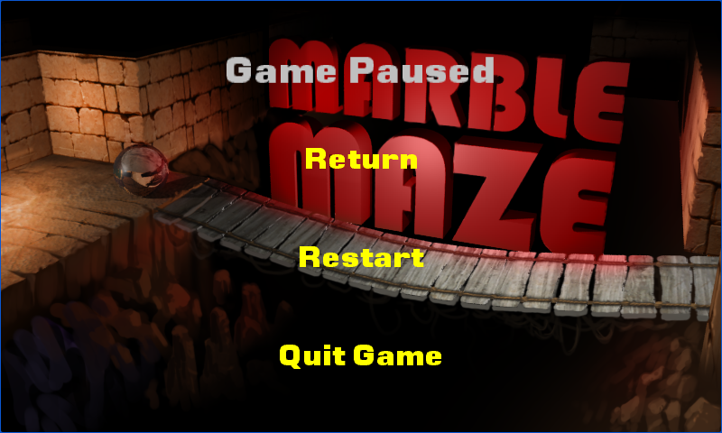

Marble Maze
Ported from the final stage of Microsoft's XNA 4.0 3D Game Development With XNA Marble Maze tutorial.
Source for this sample on GitHub ↗

Play ▸Opens in a new tab. The first load prepares the browser for the game's background loading thread.
About this sample
Tilt a textured 3D maze to roll a marble around walls and pits to the finish. The final tutorial stage includes instructions, checkpoints, sounds, a timer, pause and high scores. The original Phone game loads the level on a background thread; this browser build preserves that behavior.
Controls
| Action | Control |
|---|---|
| Navigate the menu and start | Tap or click Play, then tap or click the instructions |
| Tilt the maze | Arrow keys |
| Pause or resume | Escape; choose Return to continue |
| Restart or quit | Choose Restart or Quit Game in the pause menu |